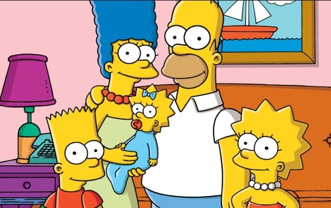

아일랜드 출신 임피제 신부가 1945년 제주에 오면서 목장 숙소
로 짓기 시작한 후 사료공장, 성당으로 활용됐습니다.
제주에서 점차 다른 지방으로 보급됐지만 현재 제주에만 건축물이 남아있는데,
국내 근현대 건축사의 한 페이지를 보여주는 가치를 지닌다고 전문가들은
평가합니다.
성이시돌목장은 제주특별자치도 제주시 한림읍 금악리에 있는 목장이다.
특히 이시돌목장은 제주 지역 최초의전기업목장 (全企業牧場)으로 1961년 11월 말 제주시 한립음 금악리에 세워 양돈 사업을 실시하였으며 면양을 사육하였던 것으로 알려져 있다. 이시돌목장의 특색있는 건축양식으로 테쉬폰도 유명하다. (출처 : 향토문화전자대전)

심슨가족 사진 귀여운 보노보노사진